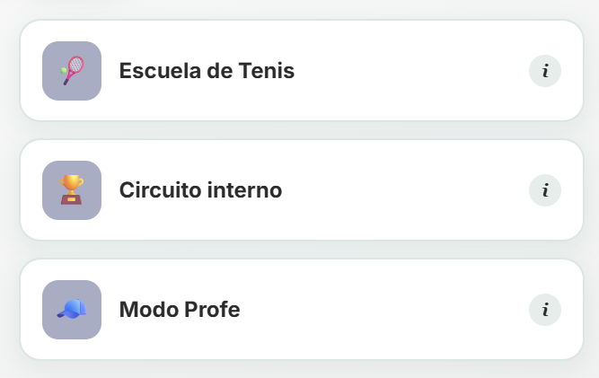
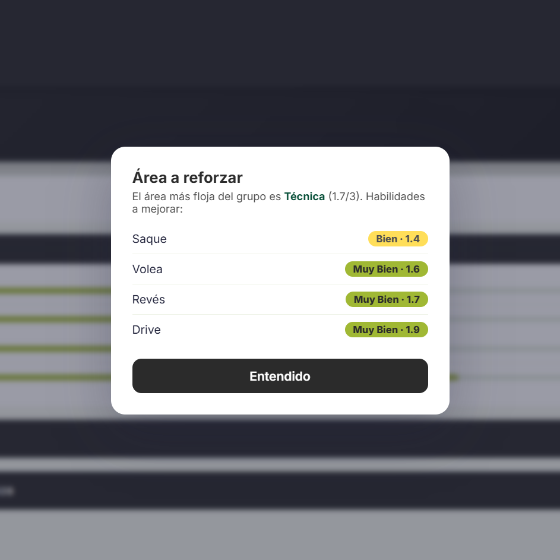
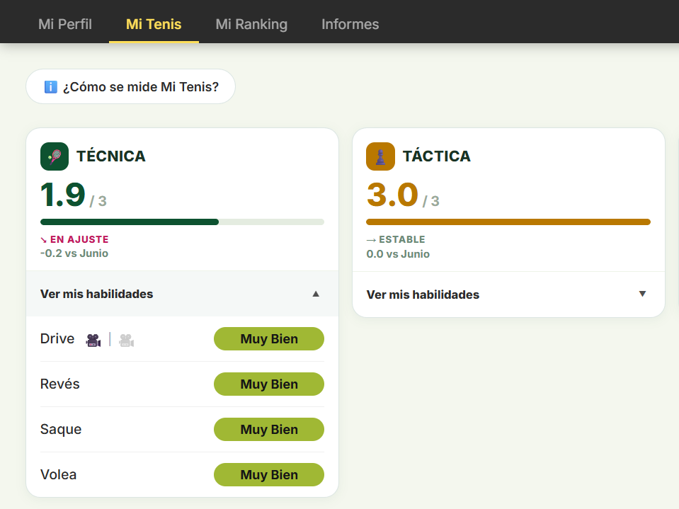

Descripción
Mi Tenis es el proyecto que conecta las dos mitades de mi carrera. Es un sistema digital donde jugadores y entrenadores pueden registrar sesiones de entrenamiento, y ver esos datos convertidos en dashboards interactivos que muestran la evolución en el tiempo, sus focos y fortalezas.
Problema
La mayoría de los jugadores y entrenadores siguen su progreso de memoria y por intuición. No hay un registro consistente de resultados de partidos, tendencias de golpes, carga física o evolución a largo plazo. Los entrenadores pierden reconocimiento de patrones valioso entre sesiones, y los jugadores no pueden ver objetivamente si realmente están mejorando.
Solución
Un sistema estructurado de registro de partidos, sets y sesiones de entrenamiento, que alimenta un modelo de datos diseñado específicamente para el rendimiento en deportes individuales.
Proceso
- Definí qué datos realmente importan para un atleta de deporte individual (a diferencia de los deportes de equipo, la mayoría de las herramientas existentes no encajan)
- Diseñé el modelo de datos: jugadores, partidos, sesiones, métricas, y cómo se relacionan
- Construí los primeros dashboards para validar qué visuales realmente usan los entrenadores en sesiones reales
- Diseño e iteración de la web oficial de "Mi Tenis"
Tecnologías
Modelado de datosExcelDiseño de productoHTMLResultados
Los primeros dashboards ya se están usando de forma informal con jugadores que entreno, reemplazando el seguimiento en cuaderno por datos estructurados y comparables entre sesiones. El modelo de datos central fue validado a través de uso real y es la base para la próxima versión del producto.
Galería



Aprendizajes
Los datos deportivos son más desordenados y personales que los datos de negocio: un solo partido cuenta una historia que una fila de planilla no puede capturar del todo.